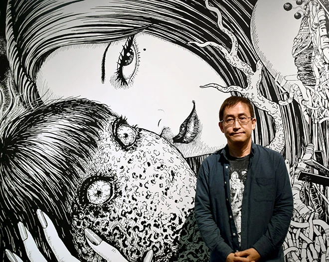
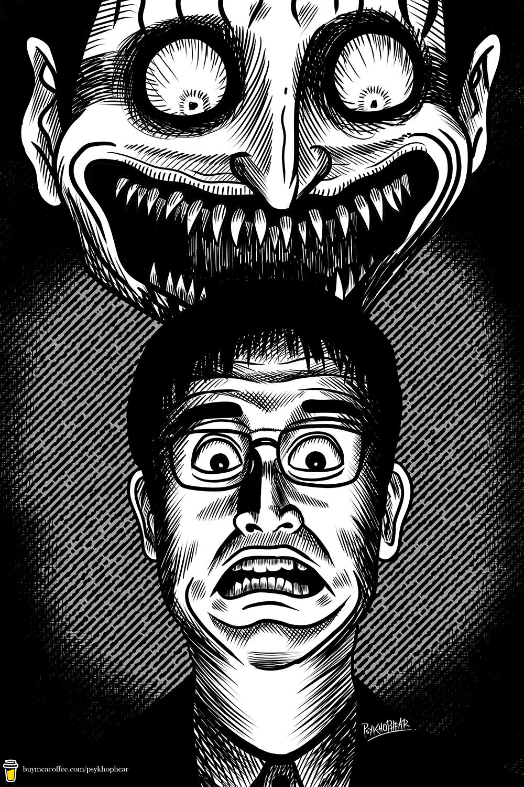
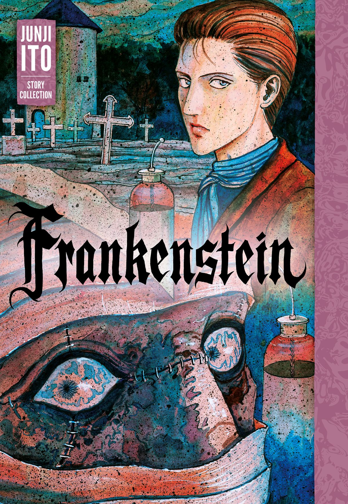
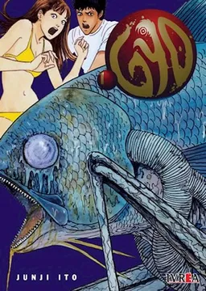

Junji Itō (伊藤 潤二 Itō Junji; 31 de julio de 1963) es un artista de manga del género de terror. Algunas de sus obras más notables incluyen Tomie, una serie que narra las crónicas de una joven inmortal que impulsa a sus admiradores a la locura, Uzumaki, una serie de tres volúmenes sobre una ciudad poseída por la maldición de los espirales, Gyo, una historia en dos volúmenes donde los peces son controlados por la cepa de una bacteria autoconsciente llamada "el hedor de la muerte", y Black Paradox, una historia relatada en un solo volumen de cuatro jóvenes que se conocen en un sitio de internet y pactan un suicidio colectivo. Algunas de sus otras obras incluyen Itō Junji Kyoufu Manga Collection, una colección de diferentes historias cortas entre las cuales destacan Souichi, el Diario de las Delicias y El diario gatuno de Junji Itou: Yon y Muu.
Nació en la prefectura de Gifu en 1963. Su primer manga leído fue Mummy Teacher de Kazuo Umezu. Sus dos hermanas mayores leían revistas con obras de Umezu y Shinichi Koga y, por tanto, él también las leía. Creció en la vieja casa familiar en el campo, cerca de Nagano. De arquitectura tradicional, el baño estaba fuera, en un cobertizo y para hacer más cómodo ir hasta él, sus padres habían excavado un túnel subterráneo de la casa al baño. Oscuro y habitado por grillos araña, al pequeño Ito le daba mucho miedo usarlo. Tales experiencias infantiles se reflejarán más tarde en sus obras.
Junji Ito
(伊藤 潤二 Itō Junji)
Informacación
Género:
Maculino
Ocupación
Mangaka


Obras

Frankenstein
Género
terror
Guión
Junji Ito
Dibujo y Entintado
Junji Ito
Sinopsis
El doctor Victor Frankenstein es un científico obsesionado con dar el siguiente paso del progreso humano, y su intención es la de crear vida partiendo de materia muerta. De este experimento sale el monstruo que todos conocemos.
Junji Ito Collection
Género
terror, sobrenatural
Guión
Junji Ito
Estudio de Animación
Studio Deen
Sinopsis
Las obras de uno de los más famosos maestros japoneses del terror, Junji Ito, finalmente dan el salto al anime. Una recopilación de historias donde cada episodio tendrá su propio protagonista y que adaptarán varias de las obras cortas del autor para hacernos sentir escalofríos y hacernos mirar a nuestro alrededor temerosos de que la oscuridad que nos rodea nos engulla.

Gyo
Género
terror fantástico
Guión
Junji Ito
Dibujo y Entintado
Junji Ito
Sinopsis
Los protagonistas son Tadashi y Kaori, una pareja que viaja hasta Okinawa, que buceando cerca de un viejo destructor de guerra hundido ven una extraña criatura. Al volver a la casa, comienzan a oler un olor terrible, y descubren un extraño pez con patas metalicas. Ese pez será el primero de una auténtica invasión de animales marinos con patas metálicas.